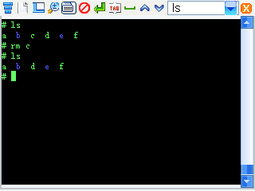
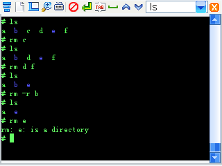
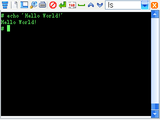

昊哥的NP1500私房菜
2012-02-06
第二讲 - shell和常用命令
启动终端后,终端会自动启动shell.
shell或Bash是命令解释器,它可以把你输入的命令翻译成机子要实际运行的程序或动作.
那个#就代表着shell已启动,等待命令输入.
下面,讲shell的常用命令,也是新手必须要掌握的命令.
我们最常用的命令有:
ls cd pwd cat cp mv rm rmdir mkdir chmod ln echo clear reboot
先说ls(list)..
ls的功能是,显示当前目录下的文件/文件夹.
ls命令会以不同的颜色来显示不同种类的文件:
文件夹显示为蓝色;
可执行文件显示为绿色;
普通文件显示的颜色与终端的默认颜色一样,比如我的终端是黑底绿字,普通文件的颜色也是黑底绿字,这里与可执行文件重复了;
天蓝色代表着链接文件,链接是一种类似于快捷方式的文件,它链接着一个文件或是文件夹;
还有一种颜色是紫色,它代表着设备文件,比如,各种磁盘分区等,在Linux里都以设备文件的形式出现.
ls命令有很多的选项,可以通过 ls --help 或是 help ls 来查看:

这些选项中,常用的有-1,-a,-l,-h,-R.
-1代表着每一行只显示一个文件/文件夹:
-a的作用是显示以.开头的隐藏文件.
Linux系统中,文件名以.开头代表着该文件是隐藏文件.
这些就是隐藏文件.
-l选项会输出很长的列表格式,显示出文件的详细信息:
输出的有文件的权限信息,属于的用户,文件大小和修改日期等.
你会发现,在这里显示的文件大小是以字节形式显示的,这并不方便
这时候就用到-h选项了.
-h的作用是,将文件大小以可读的形式输出(用k/M/G的单位输出),比如,1k,243M,2G:
-h需要配合-l来使用.
最后一个常用的是-R,-R将以递归的方法搜索当前目录下的所有子目录,并显示:
然后讲cd(change directory)命令.
cd的功能是,进入指定的目录.
问:不是和dos差不多嘛？
差不多,但也有一些不同.
Linux的根目录是/,不像Windows有C:/D:/E:什么的.
而且,Linux每一级目录的分隔符号是/,而不是Windows的\,比如/mnt/mmc:
在ls下看到的目录可以用cd进入,TAB自动补全功能也是可用的.
cd进入目录后,可以用pwd来显示现在所在路径.
然后讲cat命令.
cat的功能是,显示一个文件的内容.
cat main.c
将会打印出main.c文件的内容:
二进制的程序文件也可以显示(如果你想的话).不过会输出乱码:
问:咋跟记事本一样？
是的,功能都是显示文件的内容,记事本可以编辑,但cat只是显示.
然后讲cp命令.cp,全称copy,拷贝,也叫复制.
cp可以用来复制一个文件或是目录,也可以在复制的同时改名.
cp file1 file2
可以将file1复制为file2,比如:
cp /main.c /tmp/
会把根目录/下的main.c复制到/tmp目录下:
也可以在复制的同时改名.
cp /main.c /tmp/test.c
会把根目录下的main.c复制到/tmp目录下,并改名为test.c:
cp的常用选项是-r.
-r将会以递归的方法来复制整个目录.
cp -r /etc /mnt/mmc
将会把根目录下的etc文件夹整个复制到存储卡里:
cp有一个选项是-i,作用是如果有重复文件时,会询问是否覆盖:
然后是mv命令.mv,全称move,剪切.
mv命令可以用来移动文件/目录,也可以用来重命名.
mv的用法与cp基本上相同,差别就是cp会保留原文件,而mv会删除源文件,因此mv也被用来重命名文件.
mv /mnt/mmc/etc /mnt/mmc/test
将会把存储卡下的etc文件夹重命名为test:
用mv来重命名/移动目录是不需要加-r选项的.
mv同样有一个选项是-i,如果有重复文件时,会询问是否覆盖:
然后讲rm.rm,全称remove,作用是删除文件/目录:

rm后可加多个文件,会同时删除那些文件:
类似于cp,rm有一个选项是-r,用于删除目录:
如果不加-r,将会显示错误:

rm同样也有一个选项是-i,在删除前会进行确认:
有一个类似于rm的命令是rmdir(remove directory),用于删除空目录.
如果那个目录下有文件的话,rmdir将会报错:
mkdir(make directory)的功能与rmdir相反,mkdir用于创建一个目录.
mkdir abc
将会创建一个名为abc的目录:
mkdir后面也可以跟着多个名字,会同时创建那些目录:
chmod(change mode)命令用于修改文件权限.
文件权限有可读/可写/可执行,符号分别是r/w/x:
文件的权限分为三组,三组rwx分别代表着文件拥有者,文件所属的用户组和其他用户的权限,chmod可以修改那些权限.
比如,现在main.c的权限是rw-r--r--,通过chmod 777可以修改为rwxrwxrwx.
chmod 777里的7=4+2+1,4代表可读r,2代表可写w,1代表可执行x,三组7分别设置那三种用户的权限:
然后讲ln(link)命令.ln的功能是创建一个链接文件,类似快捷方式的作用.
注意:FAT/FAT32/NTFS文件系统不支持ln链接(Win7的NTFS支持).
链接文件分为硬链接和软链接.
创建的如果是硬链接,那么即使原文件被删掉了,连接出的文件里还保存着原文件的内容,就类似于复制.
与复制不同的是,在原文件修改时它的内容也会自动修改.
但是硬链接只能创建于同一个文件系统上,不能跨文件系统,比如系统根目录/与存储卡/mnt/mmc之间就不能创建硬链接.
还有一种连接是软链接,它没有文件系统的限制,所以最常用的还是软链接.
软链接才是真正类似于快捷方式的东西.当源文件被删除后,它也会失去作用,变成一个断掉的链接.但是它可以跨文件系统.
ln file1 file2
将会创建file1的硬链接文件file2.
加上-s创建的就是软链接了.
比如,在当前目录下:
ln -s /mnt/UsrDisk/Noah-IDE Noah-IDE
将会创建一个到/mnt/UsrDisk/Noah-IDE的连接,ls Noah-IDE就相当于ls /mnt/UsrDisk/Noah-IDE:
ln还有两个常用参数是-n和-f.
-n代表着如果有重名文件不覆盖,-f则是覆盖:
下面讲一下echo.
echo用来显示字符,把字符打印到屏幕上.
echo 'Hello World!' 将会在屏幕上打印字符 Hello World!

如果想看echo的帮助,echo --help是不行的,要用help echo,因为echo --help将会打印--help:
echo在显示完字符后会换行,加上-n则不会换行:
echo -e可以开启对转义序列的支持,转义序列可以设定输出字的格式(颜色等).
转义序列是以\e或\E或\033开头的格式控制字符串.
echo -e '\e[33;41mHello World!\E[0m' 将会输出红底黄字的Hello World!
\e[33;41m和\e[0m就是转义序列.
33的第一个3代表前景色,第二个3代表黄色,41的第一个4代表背景色,第二个1代表红色,\e[0m代表清除所有属性.
关于转义序列的详细用法,推荐唯吾无为的转义序列笔记.
clear命令用来清除屏幕:
最后再加一个reboot命令.reboot:重启.这个不用多介绍了吧?